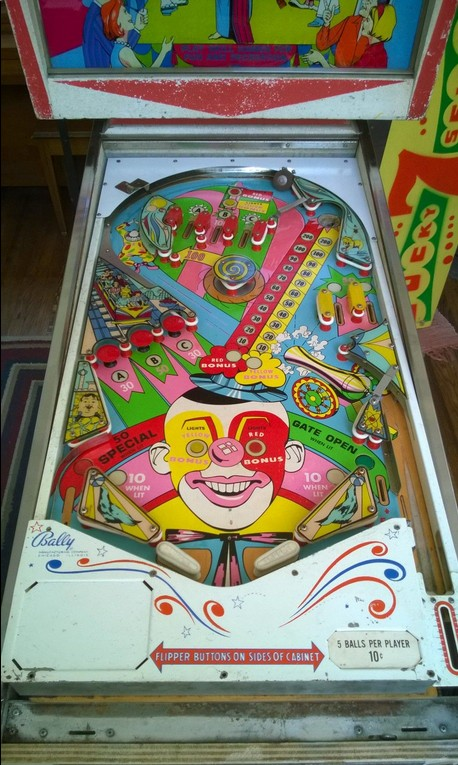

This game has both replay and add-a-ball versions, and both are called Loop the Loop. Differences between the two rulesets are explained throughout the guide as they are relevant.
Either the red or yellow bonus is in play at any time, but never both. The Lights Yellow Bonus and Lights Red Bonus rollover buttons above the B top lane or in the clown's eyes near the flippers will switch which bonus is selected. Making the A or C top lanes or hitting any of the three mushroom bumpers on the left of the game adds 10 points to the current bonus, up to a maximum of 200. The B top lane adds 50 points to the currently selected bonus. The selected bonus can be collected at any time by shooting the saucer in the back right. Collecting a bonus resets only that bonus back to 10 points. Bonuses are preserved across players, balls, and games until they are collected,
If either of the bonuses is at exactly 90, 130, or 150 points, the left out lane will be lit for Special. On the replay version of the game, Special scores 100 points or a free game. On the add-a-ball version of the game, Special is an automatic kickback that launches the ball back into play.
On the add-a-ball version of the game only, extra balls can be earned by collecting a bonus worth 160 and/or 180 and/or 200 points.
Making a lit A-B-C top lane or mushroom bumper collects that letter and unlights it. Unlighting all of A-B-C opens the free ball gate in the right out lane, which directs the ball back to the shooter lane for a replunge. Using the free ball gate resets the A-B-C sequence. A and C can be tied together so that collecting either one gives credit for both. A and C top lanes and mushroom bumpers score 30 points. The B top lane scores 100, while the B mushroom bumper scores 50.
There are no points award for hitting the spinning carousel post in the center of the game, but it can fling the ball into the 100-point wall switch located just below the A top lane that cannot be shot directly. Otherwise, this "rotary flipper" is only meant to cause chaos and fling the ball in unexpected directions.
Slingshots score 1 point or 10 when lit, and the two upper right side lanes score 10 points or 50 when lit. Every 5th activation of the 10-point relay anywhere in the game alternates which of the two upper right lanes and which of the two lower slingshots are lit.
There are no in lanes. Out lanes score 50 points in addition to potentially being lit for Special or Gate Open as described above.
There is no end of ball bonus. Tilt ends game, but only for the player who tilted.
The below picture of Loop the Loop's playfield was taken from the Internet Pinball Database, where it was originally provided by Mark Edwards.
